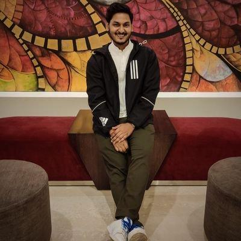

Co-founder at Fern (Ishiki Labs Inc., YC) · Ex-Meta Research Scientist · Ph.D. in ECE, Purdue University
Amit Kumar Singh Yadav received his B.Tech. in Electrical Engineering and Computer Science from the Indian Institute of Technology Gandhinagar, India, graduating with the Director’s Medal. During his undergraduate studies, he was awarded international scholarships including JASSO and Mitacs to conduct research in Japan and Canada, respectively. He went on to receive his Ph.D. in Electrical and Computer Engineering from Purdue University, USA, where his doctoral research focused on self-supervised methods for speech forensics and on building interpretable, demographically unbiased forensic detectors for the DARPA SemaFor program. After his Ph.D., Amit worked as a Research Scientist at Meta, USA, where he worked on SpeechLLMs for speech recognition at Meta Superintelligence Lab and on post-training 400B-parameter multimodal LLMs at Meta Reality Labs. In 2026, he co-founded Fern aka Ishiki Labs Inc., a Y Combinator-backed startup. He has published more than 20 papers at international conferences, with research interests spanning media forensics, speech recognition, and multimodal LLMs.
Can a general-purpose LLM directly read, edit, and compress the weights of real-world audio models without running gradient descent? We show that a single unified Weight-Space Programming harness scales from a 318M-parameter Audio Deepfake Detector (compressed 3.66× to 86.8M while cutting In-The-Wild EER from 11.22% to 2.51%) to a standalone 13.31B-parameter Speech Recognition model (ishiki-labs/ishiki-asr-1.0, achieving 3.75% average WER at 302.3× RTFx across all 76,443 utterances of the 10 public Hugging Face Open ASR Leaderboard benchmarks and cutting 4-corruption noisy WER from 8.09% to 6.87%).